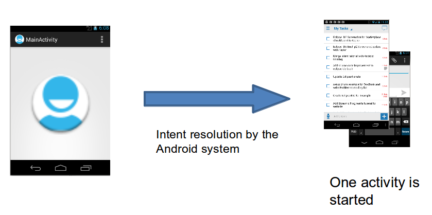
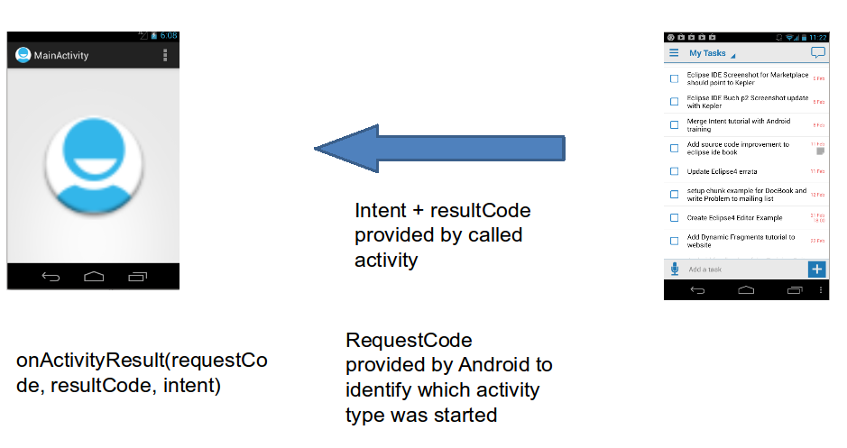

Desarrollo de Aplicaciones Android
"2. Interactuando con Componentes"
Miguel Vega
Mayo, 2013
Agenda
- Intent
- Intent Resolution
- Intent Filters
Desarrollo de aplicaciones Android. Interacción
Interactuando con Componentes
- Intent
- Intent Resolution
- Intent Filters
Intent
- Mensajes asíncronos de sistema, que permiten solicitar funcionalidades entre componentes dentro del sistema.
- Notifica hardware (SD Card insertada)
- Notifica llegada de data (mensaje en Inbox)
- Notifica eventos de aplicación (activity iniciada desde Menu Principal)
Intent Explícitos
- Define que componente ejecutar el sistema Android
- Se puede adjuntar data extra para ser recibida por el componente destino
Intent intent = new Intent(this, TargetActivity.class);
intent.putExtra("key1", "A serializable value to pass");
intent.putExtra("key2", 979797);
Intent Implícitos
- Define que la acción a ser ejecutada, adjunta a esta, información para su procesamiento
Intent i = new Intent(Intent.ACTION_VIEW, Uri.parse("http://www.vogella.com"));
startActivity(i);
Transferencia de Datos
- EL receptor puede obtener estos datos a traves de los métodos:
getIntent().getAction();
getIntent().getData()
- Pares Key/Value
- Key, siempre es String
- Value, primitivo (int, float, etc); String, Bundle, Parceable and Serializable
Share Intent
- Compartir datos con otras personas: Facebook, Google+, Gmail, Twitter.
Intent intent = new Intent(Intent.ACTION_SEND);
intent.setType("text/plain");
intent.putExtra(android.content.Intent.EXTRA_TEXT, "News for you!");
startActivity(intent);
Bundle extras = getIntent().getExtras();
if (extras == null) {
return;
}
// Get data via the key
String value1 = extras.getString(Intent.EXTRA_TEXT);
if (value1 != null) {
// Do something with the data
}
Intent Resolution
- Existen tre piezas importantes que el Intent utiliza
-
- action, debe ser listada por el componente como una soportada
- type, el tipo de data, que se envia.
- category, la categoria a la que el componente pertenece
<category android:name="android.intent.category.LAUNCHER" /> <category android:name="android.intent.category.ALTERNATIVE" />
Interactuando con Componentes
- Intent
- Intent Resolution
- Intent Filters
Inicio de Intent
- 
Finalización de Intent
- 
public void onClick(View view) {
Intent i = new Intent(this, ActivityTwo.class);
i.putExtra("Value1", "This value one for ActivityTwo ");
startActivityForResult(i, REQUEST_CODE);//un request code para identificar nuestra llamada
}
@Override
public void finish() {
Intent data = new Intent();// Prepare data intent
data.putExtra("returnKey", "anything....");
setResult(RESULT_OK, data);// Activity finalizada exitosamente
super.finish();
}
@Override
protected void onActivityResult(int requestCode, int resultCode, Intent data) {
if (resultCode == RESULT_OK && requestCode == REQUEST_CODE) {
if (data.hasExtra("returnKey")) {
...
}
}
}
Interactuando con Componentes
- Intent
- Intent Resolution
- Intent Filters
IntentFilter
- Si se envia un Intent al sistema, este determinara que aplicación utilizar
- Determina tipos de Intent a los cuales una Activity, Service o BroadCastReceiver debe responder
- Si un componente no define un intent filter, solo puede ser llamado explícitamente
- AndroidManifest.xml
<activity android:name=".BrowserActivitiy"
android:label="@string/app_name">
<intent-filter>
<action android:name="android.intent.action.VIEW" />
<category android:name="android.intent.category.DEFAULT" />
<data android:scheme="http"/>
</intent-filter>
</activity>
IntentFilter
- ... retomando el tema de SharedIntent
<activity
android:name=".ActivityTest"
android:label="@string/app_name" >
<intent-filter>
<action android:name="android.intent.action.SEND" />
<category android:name="android.intent.category.DEFAULT" />
<data android:mimeType="text/plain" />
</intent-filter>
Más acerca de Intents
- Pueden usarse para enviar mensajes broadcast al sistema y los BoradcastReceiver, se encargan de escucharlos
- Se los puede registrar para eventos de sistema (email, call, system boot, etc)
El uso de Parceable es recomendable por sobre el uso de Serializable
- asi ...

... el uso de nuestros objetos para ser enviados por el sistema, es:
public class Object1 implements Parcelable {
// parcelable code Object1
}
public class Object2 implements Parcelable {
private Object1 obj1;
private long longVal;
// add Object1 here with getter setter
// parcelable code for Object2
@Override
public void writeToParcel(Parcel dest, int flags) {
dest.writeParcelable(obj1, flags);
dest.writeLong(longVal);
}
private void readFromParcel(Parcel in) {
obj1 = in.readParcelable(CustomObject1.class.getClassLoader());
longVal = in.readLong();
}
............
}
em@il:
miguelvega.name@gmail.com